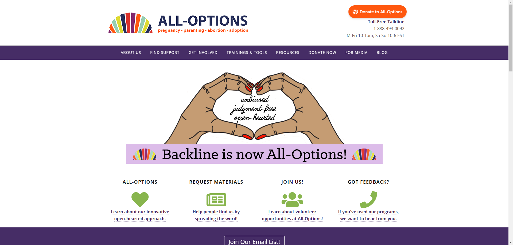
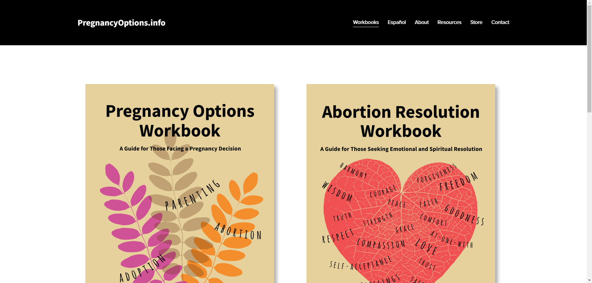
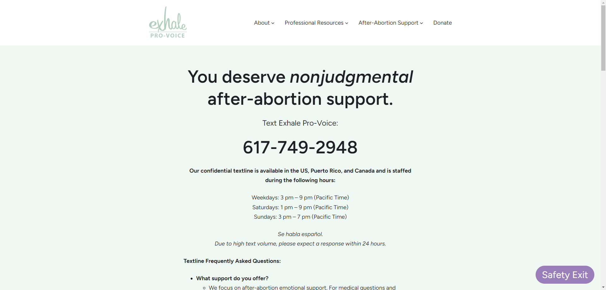
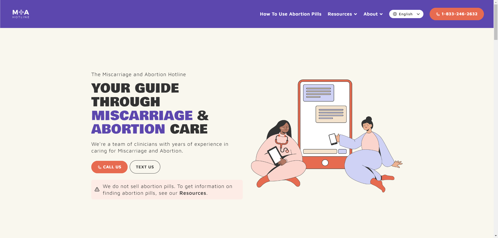
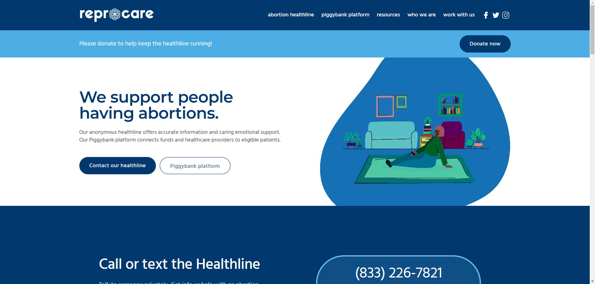

Reproductive Rights Hub
NPR
Google News
ELECTRONIC FRONTIER FOUNDATION
The United States of Abortion Mazes
Status of Abortion in US
DO YOU NEED AN ABORTION?
(Click and drag over the image below to reveal a secret message...)
Guttmacher Institute
Abortion Pills
INeedAnA is a resource designed to help individuals in the U.S. access abortion services, offering information about clinics, abortion pills by mail, and state laws. The site prioritizes user privacy, with no data storage or tracking.
Abortion Finder helps individuals locate abortion providers in the U.S., offering an easy-to-use clinic locator based on location. The site includes information on different types of abortion procedures, financial assistance, and support for those seeking care.
Aid Access offers online access to abortion pills and miscarriage treatment, providing confidential services for individuals in all 50 U.S. states. The site allows users to order pills for $150 or less, with prescriptions issued by U.S. abortion providers.
Plan C Pills offers resources on how to access and use abortion pills safely and effectively. The site includes detailed instructions on how to take the pills, along with helpful tools like a multilingual chatbot called Ally for guidance. It also offers a step-by-step guide and resources in multiple languages.
Just The Pill offers confidential and private abortion services, providing medication abortion by mail or through mobile clinics. Users can access telemedicine consultations with licensed clinicians, with medications like abortion pills delivered directly to their homes.
Hey Jane offers online abortion care with a focus on providing the abortion pill to individuals up to 10 weeks pregnant. This process is supported through virtual consultations with medical professionals, who guide patients through the steps of the medication, offer ongoing support, and ensure safe use of the medications.
Women on Web is an organization that provides access to safe abortion pills by mail for people worldwide. It offers resources about abortion pills, including how to use them, their safety, and potential side effects.
- All Options is a nonprofit organization dedicated to providing unconditional, judgment-free support for individuals navigating experiences related to pregnancy, parenting, abortion, and adoption. The Talkline operates Monday through Friday from 10-1am, and Saturday through Sunday from 10-6pm EST. The number is 1-888-493-0092.
- Elevated Access is a non-profit organization that provides free transportation to individuals seeking essential healthcare services, particularly abortion and gender-affirming care. Through a network of vetted volunteer pilots, they offer private flights to help clients access necessary medical treatments across the United States.


Abortion Aftercare Kits
Emotional Support
All Options is a nonprofit organization dedicated to providing unconditional, judgment-free support for individuals navigating experiences related to pregnancy, parenting, abortion, and adoption. The Talkline operates Monday through Friday from 10-1am, and Saturday through Sunday from 10-6pm EST. The number is 1-888-493-0092.

Pregnancy Options provides comprehensive information and resources for individuals facing pregnancy decisions. It covers various options such as parenting, adoption, and abortion, emphasizing unbiased, evidence-based information to support informed choices. The site addresses emotional and practical aspects of each option, offers guidance on accessing services, and includes personal stories to provide perspective. It aims to empower individuals by ensuring they have access to accurate information and support during a critical time.

2+ Abortions Worldwide is a platform that shares personal stories of individuals who have had two or more abortions, aiming to reduce stigma surrounding abortion. It provides a supportive space for people to tell their stories, share resources, and educate others about abortion experiences. The website also includes information on second-trimester abortions, stories from people of faith, and resources for emotional support. Its mission is to normalize the conversation around abortion and empower individuals.
Exhale Pro-Voice serves as a supportive space for individuals who have experienced abortion. It offers resources, including a confidential talkline, for emotional support and connects people with personal stories to foster empathy and understanding. The site promotes healing and resilience by providing a platform where individuals can share their experiences and find community without judgment, aiming to reduce stigma and create a more compassionate dialogue around reproductive choices.

M + A Hotline provides information and resources related to medication abortion (MA). It offers guidance on accessing medication abortion safely and legally, including information about the process, eligibility criteria, and potential side effects. The site aims to empower individuals with accurate information and support to make informed decisions about their reproductive health. Additionally, it provides resources for healthcare providers and advocates, contributing to broader education and advocacy efforts surrounding medication abortion access.

ReproCare offers comprehensive information and services related to reproductive health care. It provides resources and support for individuals seeking abortion care, contraception, and other reproductive health services. The site emphasizes patient-centered care, privacy, and accessibility, aiming to empower individuals to make informed decisions about their reproductive health. ReproCare also provides information on clinics, services available, and guidance on accessing care, promoting reproductive rights and health equity.


Abortion Pills
Aid Access offers online access to abortion pills and miscarriage treatment, providing confidential services for individuals in all 50 U.S. states. The site allows users to order pills for $150 or less, with prescriptions issued by U.S. abortion providers.
Plan C Pills offers resources on how to access and use abortion pills safely and effectively. The site includes detailed instructions on how to take the pills, along with helpful tools like a multilingual chatbot called Ally for guidance. It also offers a step-by-step guide and resources in multiple languages.
Just The Pill offers confidential and private abortion services, providing medication abortion by mail or through mobile clinics. Users can access telemedicine consultations with licensed clinicians, with medications like abortion pills delivered directly to their homes.
Hey Jane offers online abortion care with a focus on providing the abortion pill to individuals up to 10 weeks pregnant. This process is supported through virtual consultations with medical professionals, who guide patients through the steps of the medication, offer ongoing support, and ensure safe use of the medications.
Women on Web is an organization that provides access to safe abortion pills by mail for people worldwide. It offers resources about abortion pills, including how to use them, their safety, and potential side effects.